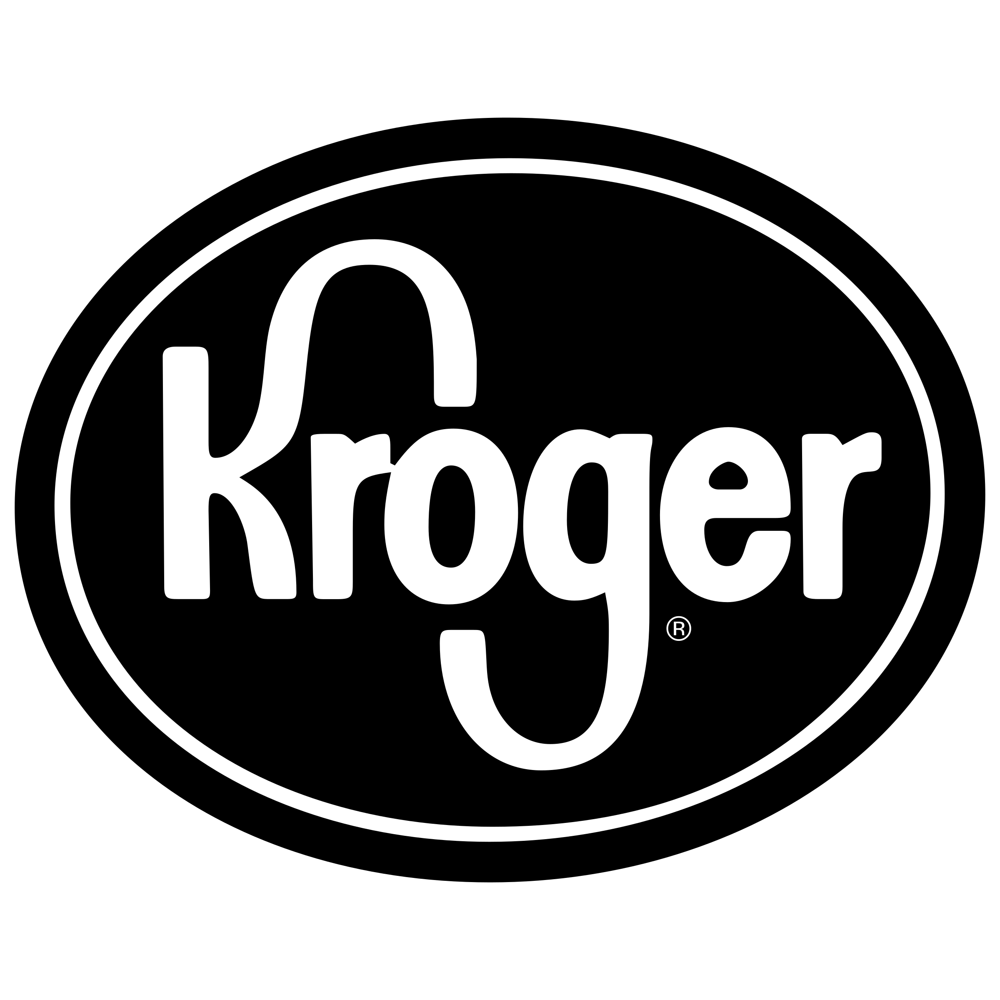

BrandSense
Scans
About
Home
1 / 3

BMW
2 / 3
NIKE
3 / 3

Kroger
BrandSense aims to provide a streamlined, modern add campaigns for companies of all sizes.
BrandSense offers an aesthetically pleasing replacement for QR codes. Through the power of Google Cloud Vision, we identify the logo of participating brands. After identifying a logo We take you to the whichever campaign the company is promoting with that particular logo.
QR codes work well for linking to websites, but lack the iconography of a company's logo. With BrandSense, companies can have the best of both worlds, using their distinctive logos and linking to whatever website they choose. Through our complex database, BrandSense offers fast logo identification, and quickly links to a brand's campaign.